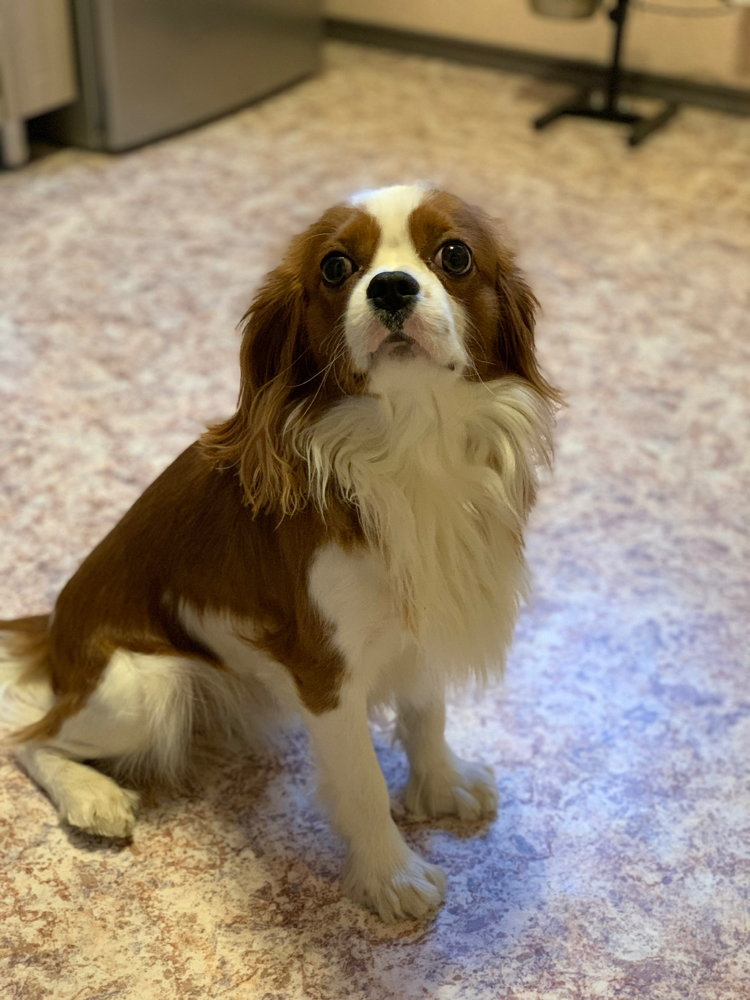

The Cavalier King Charles Spaniel is a small breed of spaniel classed in the toy group of The Kennel Club and the American Kennel Club[1] that originated in the United Kingdom. Since 2000, it has grown in popularity in the United States and ranks as the 19th most popular pure-breed in the United States.[2] It has a silky, smooth coat and commonly a smooth undocked tail. The breed standard recognizes four colours: Blenheim (chestnut and white), tricolour (black/white/tan), black and tan, and ruby.[1] The breed is generally friendly, placid, and good with both children and other animals; however, they require much human interaction. Since they are family dogs, it is recommended to not leave one alone for long periods at a time. The expected lifespan of a Cavalier King Charles Spaniel is between nine and fourteen years.[3]
The Cavalier King Charles changed dramatically in the late 17th century, when it was interbred with flat-nosed breeds. Until the 1920s, the Cavalier shared the same history as the smaller King Charles Spaniel. Breeders attempted to recreate what they considered to be the original configuration of the breed, a dog resembling Charles II's King Charles Spaniel of the Restoration.
History

During the early part of the 18th century, John Churchill, 1st Duke of Marlborough, kept red and white King Charles type spaniels for hunting. The duke recorded that they were able to keep up with a trotting horse. His estate was named Blenheim in honor of his victory at the Battle of Blenheim. Because of this influence, the red and white variety of the King Charles Spaniel and thus the Cavalier King Charles Spaniel became known as the Blenheim.[4]
Attempts were made to recreate the original Cavalier King Charles Spaniel as early as the turn of the 20th century, using the now extinct Toy Trawler Spaniels. These attempts were documented by Judith Blunt-Lytton, 16th Baroness Wentworth, in the book "Toy Dogs and Their Ancestors Including the History And Management of Toy Spaniels, Pekingese, Japanese and Pomeranians" published under the name of the "Hon. Mrs Neville Lytton" in 1911.[5]
Divergence from King Charles Spaniel
In 1926, the American Roswell Eldridge offered a dog show class prize of twenty-five pounds of sterling silver each as a prize for the best male and females of "Blenheim Spaniels of the old type, as shown in pictures of Charles II of England's time, long face, no stop, flat skull, not inclined to be domed, with spot in center of skull."[6] The breeders of the era were appalled, although several entered what they considered to be sub-par Cavalier King Charles Spaniels in the competition. Eldridge died before seeing his plan come to fruition, but several breeders believed in what he said and in 1928 the first Cavalier club was formed.[6] The first standard was created, based on a dog named "Ann's Son" owned by Mostyn Walker,[7] and the Kennel Club recognized the variety as "King Charles Spaniels, Cavalier type".[6]
The Second World War caused a drastic setback to the emerging breed, with the vast majority of breeding stock destroyed because of wartime hardship and food shortages. For instance, in the Ttiweh Cavalier Kennel, the population of sixty dogs dropped to three during the 1940s.[8] Following the war, few dogs survived as the new beginning from which all present-day Cavaliers descend. And in 1945,[9] the Kennel Club first recognized the breed in its own right as the Cavalier King Charles Spaniel.[6]
The history of the breed in America is relatively recent. The first recorded Cavalier living in the United States was brought from the United Kingdom in 1956 by W. Lyon Brown, together with Elizabeth Spalding and other enthusiasts, she founded the Cavalier King Charles Club USA that continues to the present day. In 1994, the American Cavalier King Charles Spaniel Club was created by a group of breeders to apply for recognition by the American Kennel Club. The Cavalier would go on to be recognized by the American Kennel Club in 1995,[1] and the ACKCSC became the parent club for Cavaliers.[10]
Description
Historically the Cavalier King Charles Spaniel was a lap dog and is small for a spaniel, with fully grown adults comparable in size to adolescents of other larger spaniel breeds. Breed standards state that height of a Cavalier should be between 12 to 13 inches (30 to 33 cm) with a proportionate weight between 13 to 18 pounds (5.9 to 8.2 kg). The tail is usually not docked,[11] and the Cavalier should have a silky coat of moderate length. Standards state that it should be free from curl, although a slight wave is allowed. Feathering can grow on their ears, feet, legs and tail in adulthood. Standards require this be kept long, with the feathering on the feet a particularly important aspect of the breed's features.[11]
The Cavalier King Charles Spaniel and the English Toy Spaniel can often be confused with each other. In the United Kingdom, the English Toy Spaniel is called the King Charles Spaniel, while in the United States, one of the colours of the Toy Spaniel is known as King Charles. The two breeds share similar history and only diverged from each other about 100 years ago. There are several major differences between the two breeds, with the primary difference being size. While the Cavalier weighs on average between 13 to 18 pounds (5.9 to 8.2 kg), the King Charles is smaller at 9 to 15 pounds (4.1 to 6.8 kg). In addition, their facial features, while similar, are different; the Cavalier's ears are set higher and its skull is flat, while the King Charles's skull is domed. Finally, the muzzle length of the Cavalier tends to be longer than that of its King Charles cousin.[6][12]
Colour
The breed has four recognized colours. Cavaliers that have rich chestnut markings on a pearly white background are known as Blenheim in honor of Blenheim Palace, where John Churchill, 1st Duke of Marlborough raised for assistance in hunting the predecessors to the Cavalier breed in this particular colour. In some Blenheim dogs there is a chestnut spot in the middle of the forehead: this is called the "Blenheim" spot.[13] The Blenheim spot is also known as the mark of the "Duchess Thumb Print", based on the legend that Sarah Churchill, Duchess of Marlborough while awaiting news of her husband's safe return from the Battle of Blenheim, pressed the head of an expecting dam with her thumb, resulting in five puppies bearing the lucky mark after news that the battle had been won.[14]
Black and Tan are dogs with black bodies with tan highlights, particularly eyebrows, cheeks, legs and beneath the tail.[15] Black and Tan is referred to as "King Charles" in the King Charles Spaniel.[6]
Ruby Cavaliers should be entirely chestnut all over,[16] although some can have some white in their coats that is considered a fault under American Kennel Club conformation show rules.[17]
The fourth colour is known as Tricolour, which is black and white with tan markings on cheeks, inside ears, on eyebrows, inside legs, and on underside of tail.[15] This colour is referred to as "Prince Charles" in the King Charles Spaniel.[6]